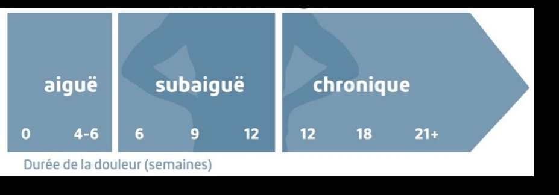

Prévention des TMS
La prévention des TMS s'organise en trois niveaux (primaire, secondaire, tertiaire) et cible deux objets : la situation de travail et le travailleur. La prévention primaire vise à éliminer ou réduire l'exposition aux facteurs de risque avant qu'ils ne causent une lésion. C'est le niveau le plus puissant et celui où l'ergonome intervient en priorité.
Table des matières
- Trois niveaux de prévention
- Cibles de la démarche
- Hiérarchie des moyens
- Indicateurs et suivi
- Application terrain
- Ressources
Trois niveaux de prévention
| Niveau | Objectif | Quand |
|---|---|---|
| Primaire | Éviter l'apparition de TMS | Avant les symptômes |
| Secondaire | Éviter l'aggravation et la chronicisation | Aux premiers symptômes |
| Tertiaire | Réduire les incapacités, favoriser le retour au travail | Après la lésion |
Le schéma ci-dessous illustre la progression des troubles musculosquelettiques et l'évolution typique d'un dossier de lésion non prise en charge.
{kind=link}

Toucher l'image pour l'agrandirPrévention primaire
Vise à évaluer et anticiper les risques en amont.
- Objectif : élimination ou diminution de l'exposition aux facteurs de risque.
- Outils : évaluation des situations à risque, substitution, conception ergonomique.
- Exemple en mine : achat d'un jumbo équipé d'un système anti-vibration et de cabine insonorisée, conçu pour un opérateur de taille moyenne avec ajustements anthropométriques.
Prévention secondaire
Vise à diminuer les conséquences dès l'apparition des premiers symptômes.
- Objectif : éviter l'aggravation et la transformation en maladie chronique.
- Outils : repérage précoce des symptômes (questionnaire nordique, tournées du conseiller), prise en charge rapide.
- Exemple en mine : suivi mensuel des inconforts via questionnaire, ajustement immédiat du poste pour un foreur qui rapporte une douleur d'épaule au stade 1.
Prévention tertiaire
Vise à réparer les dommages et diminuer les incapacités dues à une maladie professionnelle.
- Objectif : éviter chronicité, rechute et incapacité prolongée.
- Outils : mesures de retour au travail, adaptation du poste, travail allégé temporaire.
- Exemple en mine : retour progressif d'un opérateur après hernie discale, avec affectation temporaire à un poste de surface avant retour souterrain.
Cibles de la démarche
Deux grandes cibles complémentaires.
La situation de travail
- Aménagement physique.
- Outils et équipement.
- Organisation du travail (horaires, cadences, alternance).
- Environnement de travail (thermique, sonore, vibratoire).
Le travailleur
- Éducation et formation (technique de manutention, ergonomie au poste).
- Promotion de la santé (condition physique, alimentation, sommeil).
Attention : ne jamais cibler uniquement le travailleur. La culpabilisation et les seules "formations à bien lever" ont une efficacité limitée si la situation de travail reste inchangée.
Hiérarchie des moyens
Comme dans tous les champs SST, la prévention des TMS suit une hiérarchie classique des moyens (voir aussi Hiérarchie des moyens dans le wiki Hygiène).
- Élimination : supprimer la tâche à risque (automatisation, mécanisation).
- Substitution : remplacer par une option moins contraignante (outil moins vibrant, charge plus légère).
- Ingénierie : isoler la source ou modifier l'équipement (encoffrement de Vibrations, siège à suspension).
- Administratif : rotation, alternance, formation, procédures.
- EPI : gants antivibratiles, supports lombaires (en dernier recours, efficacité limitée).
En ergonomie, l'élimination prend souvent la forme de l'automatisation (boulonneur automatique, télécommande), et l'ingénierie celle de la conception ergonomique du poste (atteintes, dégagements, ajustabilité).
Indicateurs et suivi
| Indicateur | Type |
|---|---|
| Prévalence des symptômes (questionnaire nordique) | Précoce |
| Plaintes spontanées | Précoce |
| Visites au médecin du travail | Intermédiaire |
| Lésions CNESST, rôles et pouvoirs déclarées (sites, durées, coûts) | Tardif |
| Jours d'absence | Tardif |
| Taux de retour au travail | Tardif |
Les indicateurs précoces (symptômes) sont plus utiles pour la prévention que les indicateurs tardifs (lésions indemnisées), qui arrivent quand le dommage est fait.
Application terrain
Priorisation en mine
La prévention primaire est rentable et requise par la LMRSST. Quelques pistes éprouvées
| Niveau | Exemple minier |
|---|---|
| Élimination | Boulonneuse robotisée pour soutènement en chantier |
| Substitution | Foreuse électrique vs pneumatique (moins de vibrations) |
| Ingénierie | Cabine isolée des vibrations, siège à suspension calibré au poids du conducteur |
| Administratif | Rotation 2 h forage / 2 h autre tâche, pauses programmées |
| EPI | Gants antivibratiles ISO 10819 (protection limitée, surtout < 200 Hz) |
Programme structuré minier typique
- Comité paritaire SST identifie les postes prioritaires.
- Conseiller en ergonomie réalise une évaluation (questionnaire nordique + observation).
- Plan d'action validé avec les équipes.
- Implantation progressive avec suivi des indicateurs précoces.
- Évaluation à 6 et 12 mois.
Intégration au système de gestion SST
- Inscription dans le programme de prévention LMRSST.
- Coordination avec le programme de surveillance médicale (médecin du travail).
- Liens avec le retour au travail (voir Retour au Travail dans le wiki frère).
Ressources
| Document | Type | Source |
|---|---|---|
| Cours SST 1162 - S3 - Prévention des TMS | Cours | UQAT |
| Programme de prévention LMRSST, vue d'ensemble pour les RPS | Loi | CNESST, rôles et pouvoirs |
| Lignes directrices CSA Z412 (ergonomie de bureau) | Norme | CSA |
| Guide INSPQ d'évaluation des contraintes | Guide | INSPQ 2021 |
Articles wiki connexes
Pages qui pointent ici (11)
- 🏠 Wiki Ergonomie, mines Ergonomie
- 📖 Glossaire ergonomie Ergonomie
- Démarche d'intervention corrective Ergonomie
- Évaluation des risques de TMS Ergonomie
- Facteurs de risque des TMS Ergonomie
- Horaires de travail atypiques Ergonomie
- Intervention ergonomique Ergonomie
- Manutention manuelle Ergonomie
- TMS Ergonomie
- TMS (troubles musculosquelettiques) Ergonomie
- TMS par région anatomique Ergonomie